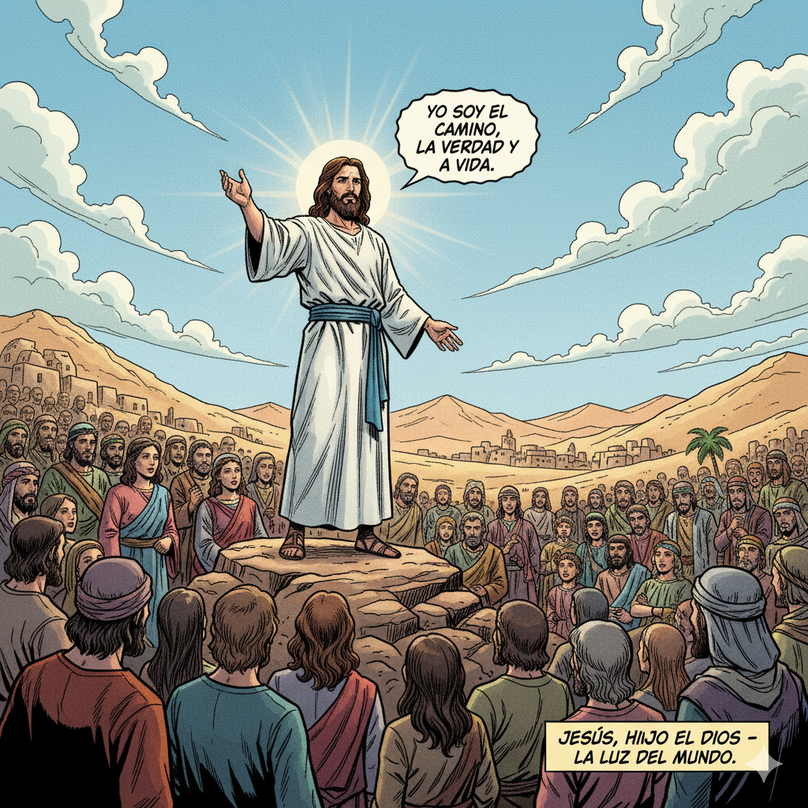

✝️ Jesús - El Hijo de Dios
üôè ORACI√ìN INICIAL
CITA_BIBLICA: "Porque tanto amó Dios al mundo que dio a su Hijo único, para que todo el que crea en él no perezca, sino que tenga vida eterna." (Juan 3:16)
Catequista: "En el nombre del Padre, del Hijo y del Espíritu Santo. Amén."
Todos: "Señor Jesús, Hijo de Dios y Salvador nuestro, te damos gracias por venir al mundo para salvarnos. Ayúdanos a conocerte mejor y a seguir tu ejemplo de amor. Que tu luz ilumine nuestros corazones. Amén."
üìñ LA HISTORIA
Jesús nació en Belén hace más de 2000 años. Su madre María lo concibió por obra del Espíritu Santo. Jesús es verdadero Dios y verdadero hombre.
Vino al mundo para salvarnos del pecado y enseñarnos el amor de Dios Padre. Durante su vida realizó milagros, sanó enfermos, perdonó pecados y predicó el Reino de los Cielos.
Murió en la cruz por nosotros y resucitó al tercer día, venciendo la muerte. Jesús es nuestro Salvador y el camino hacia la vida eterna.
Jesús nos enseñó a amar a Dios sobre todas las cosas y a nuestro prójimo como a nosotros mismos. Él es el Camino, la Verdad y la Vida.
üé® ACTIVIDAD CREATIVA
"El Corazón de Jesús"
Vamos a crear un dibujo que represente el amor de Jesús:
- Dibuja a Jesús con los brazos abiertos
- Añade un corazón brillante en su pecho
- Alrededor, dibuja a personas de diferentes edades
- Escribe palabras de amor y paz
- Decora con colores cálidos y símbolos cristianos
Espacio para dibujar
üí≠ REFLEXI√ìN
Preguntas para pensar:
- ¿Qué significa para ti que Jesús sea el Hijo de Dios?
- ¿Cómo puedes seguir el ejemplo de amor de Jesús en tu vida diaria?
- ¿Qué milagro de Jesús te llama más la atención y por qué?
- ¿Cómo puedes mostrar el amor de Jesús a los demás?
Mensaje principal: Jesús es el Hijo de Dios que vino al mundo para salvarnos. Su amor infinito nos enseña cómo vivir y nos da la esperanza de la vida eterna.
üôè ORACI√ìN FINAL
CITA_BIBLICA: "Yo soy el camino, la verdad y la vida. Nadie va al Padre sino por mí." (Juan 14:6)
Todos juntos:
"Jesús, gracias por enseñarnos el camino hacia el Padre.
Ayúdanos a ser como tú: buenos, compasivos y llenos de amor.
Que siempre recordemos que eres nuestro Salvador y amigo.
Guíanos por el camino de la verdad y la vida.
Te lo pedimos en tu nombre.
Amén."
Catequista: "En el nombre del Padre, del Hijo y del Espíritu Santo. Amén."